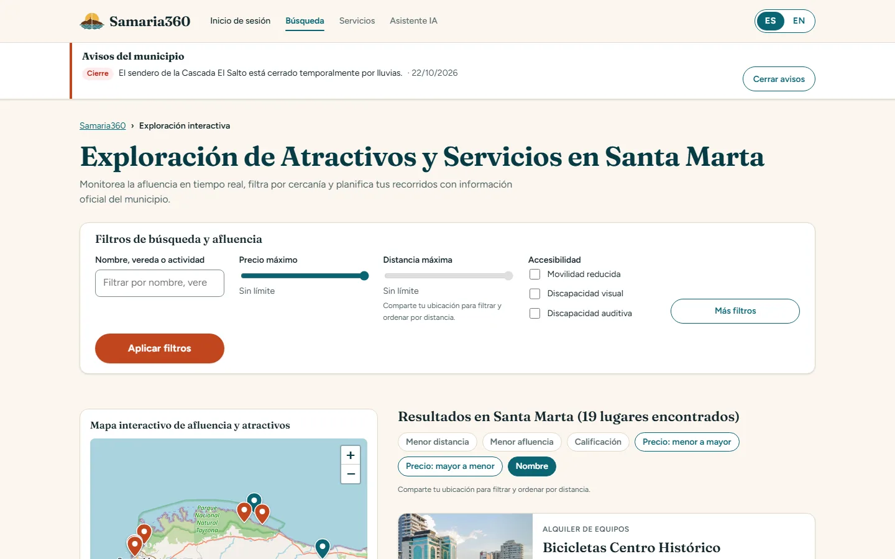

Samaria360
Principal contribuidorPlataforma de turismo de Santa Marta (proyecto Capstone). Cinco microservicios con arquitectura hexagonal detrás de un API Gateway, con eventos asíncronos por RabbitMQ. Desarrollé 46 de los 77 PRs: microservicios de reservas, catálogo, analítica y chatbot, gateway, frontend, infraestructura y pruebas de carga.
Ver repositorio →